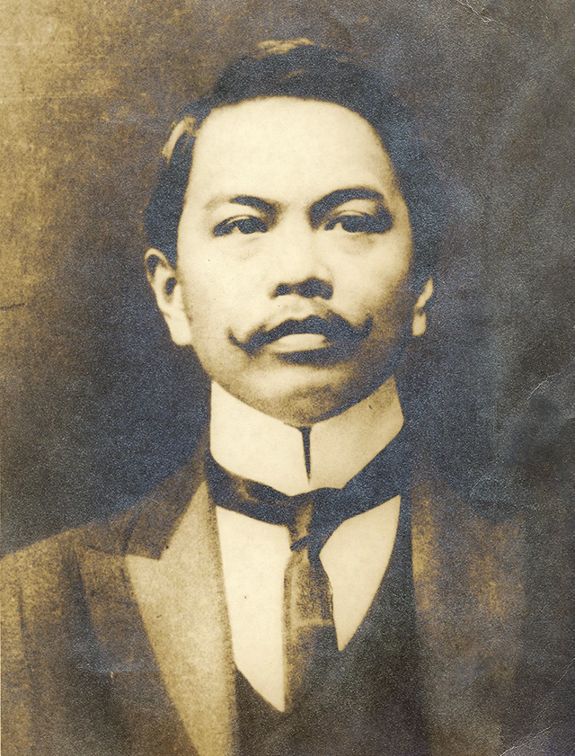

Full Name
Juan Luna de San Pedro y Novicio Ancheta
Born
October 23, 1857 (Philippines)
Died
December 7, 1899 (Hong Kong)
Notable Artwork
Spoliarium, The Death of Cleopatra
Movement
Romanticism, Neoclassicism, Realism
Juan Luna de San Pedro y Novicio Ancheta (October 23, 1857 - December 7, 1899) was a Filipino painter, sculptor and a political activist of the Philippine Revolution during the late 19th century. He became one of the first recognized Philippine artists.
His winning of the gold medal in the 1884 Madrid Exposition of Fine Arts, along with the silver win of fellow Filipino painter Félix Resurrección Hidalgo, prompted a celebration which was a significant highlight in the memoirs of members of the Propaganda Movement, with the fellow Ilustrados toasting the two painters' good health and the brotherhood between Spain and the Philippines.
Well regarded for work done in the manner of European academies of his time, Luna painted literary and historical scenes, some with an underscore of political commentary. His allegorical works were inspired by classical balance, and often showed figures in theatrical poses.